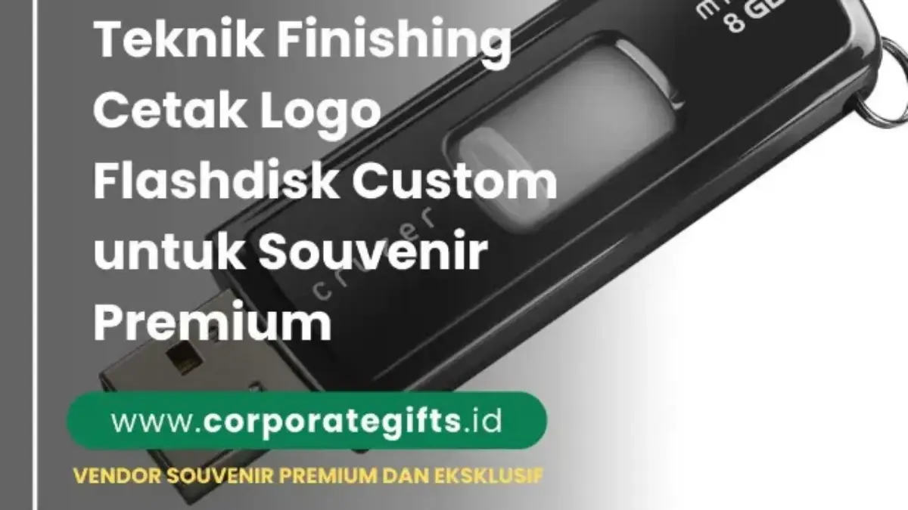

Corporate Gifts ID - Desain logo flashdisk custom yang baik memadukan teknik cetak yang sesuai dengan karakteristik bahan produk, seperti grafir laser untuk kesan elegan dan permanen, UV printing untuk logo beresolusi tinggi dan full color, serta sablon presisi untuk volume pesanan massal. Penerapan panduan warna korporat yang konsisten dan resolusi berkas minimal 300 dpi memastikan identitas visual perusahaan tampil prima. Kombinasi faktor teknis ini mentransformasikan flashdisk kantor dari sekadar alat penyimpanan data biasa menjadi instrumen branding taktis yang memperkokoh persepsi profesional di hadapan klien dan mitra bisnis.
Poin Kunci Desain Flashdisk Custom Korporat:
- Daya Guna Tinggi: Flashdisk memiliki tingkat retensi pakai berbulan-bulan bahkan bertahun-tahun, memberikan frekuensi impresi logo yang konsisten tanpa biaya berulang.
- Kesesuaian Material: Flashdisk metal dan kayu sangat tepat dipadukan dengan grafir laser monokrom, sedangkan model flashdisk kartu paling unggul dicetak UV full color dua sisi.
- Format File Master: Selalu gunakan berkas berbasis vektor (AI, EPS, SVG, atau PDF beresolusi tinggi) untuk menghindari hasil cetak buram atau pecah.
- Strategi Bundling: Sangat efektif dikombinasikan dalam paket paket seminar kit atau gift box eksklusif saat acara tahunan.
Mengapa Desain Flashdisk Custom Penting untuk Branding?
Dalam ekosistem komunikasi pemasaran B2B modern, souvenir teknologi menempati posisi istimewa karena nilai utilitasnya yang nyata. Ketika sebuah perusahaan mendistribusikan flashdisk custom, produk tersebut tidak berakhir di tempat sampah seperti brosur kertas konvensional, melainkan tersimpan di tas kerja, meja rapat, atau terpasang pada laptop para pengambil keputusan.
Desain bukan sekadar polesan tampilan luar, melainkan representasi langsung dari kredibilitas dan standar operasional entitas bisnis Anda:
- Membangun Citra Profesional: Logo yang tercetak tajam, simetris, dan proporsional mencerminkan ketelitian organisasi Anda dalam mengelola detail kemitraan.
- Memperkuat Brand Recall Organik: Setiap kali penerima menghubungkan flashdisk ke perangkat komputer untuk mentransfer dokumen kerja, logo perusahaan Anda terpapar secara visual tanpa terasa mengganggu.
- Meningkatkan Nilai Sentimental Souvenir: Finishing desain yang mewah menjadikan flashdisk barang koleksi yang dihargai dan dijaga, bukan sekadar barang gratisan promosi murahan.
Sebagai contoh aplikatif, flashdisk kartu (card USB) dapat didesain menyerupai kartu nama VIP dengan mencantumkan QR code interaktif ke katalog digital di satu sisi, dan visual kampanye korporat di sisi lainnya.
Teknik Cetak Logo pada Flashdisk Custom
Memahami kekuatan dan limitasi dari masing-masing teknologi cetak logo merupakan langkah fundamental sebelum Anda menyetujui lembar bukti kerja (proofing sheet) dari pabrik percetakan.
1. Grafir Laser (Laser Engraving)
Grafir laser memanfaatkan sinar laser berdaya fokus tinggi untuk mengikis lapisan terluar material bodi flashdisk secara mikroskopis. Hasil akhir berupa ukiran permanen yang menyatu secara struktural dengan media produk.
- Kelebihan Utama: Ketahanan fisik tak tertandingi (anti-luntur, anti-kikis, dan tahan terhadap goresan kunci di saku), memberikan impresi eksklusif dan mewah.
- Material Paling Ideal: Flashdisk berbahan dasar logam/stainless steel, paduan aluminium, kayu bambu alami, serta kulit sintetis PU.
- Batasan Teknis: Grafir laser hanya menghasilkan rona monokrom alami (mengikuti warna dasar logam di balik cat bodi) dan tidak dapat memproduksi warna tertentu seperti merah, hijau, atau biru.
2. UV Printing Full Color
Teknologi Digital Flatbed UV Printing menggunakan tinta polymer khusus yang langsung dikeringkan secara instan oleh sinar ultraviolet seketika setelah disemprotkan ke permukaan produk.
- Kelebihan Utama: Mampu memproduksi gradasi warna yang sangat halus, detail tipografi berukuran kecil, hingga gambar fotografi dengan saturasi warna hidup tanpa batas jumlah warna (unlimited color).
- Material Paling Ideal: Flashdisk kartu plastik ABS, akrilik bening, flashdisk karet silicon datar, dan bodi logam berlapisan cat putih doff.
- Batasan Teknis: Tinta UV dapat tergores jika mengalami benturan keras berulang kali dengan benda tajam, sehingga penambahan lapisan pelindung transparan (clear coating varnish) sangat disarankan.

Perbandingan visual antara teknik grafir laser pada bodi logam dan pencetakan digital UV full color pada flashdisk kartu.
3. Sablon Warna (Screen Printing)
Metode sablon presisi menggunakan pasta tinta khusus yang ditekan melalui kain saring berpori (screen mesh) ke permukaan bodi flashdisk.
- Kelebihan Utama: Sangat ekonomis untuk volume produksi massal di atas 500 pcs dengan jumlah warna logo terbatas (1 hingga 2 warna solid pantone).
- Material Paling Ideal: Flashdisk berbahan plastik silinder putar (flashdisk swivel), flashdisk karet, dan casing metal datar.
- Batasan Teknis: Tidak dapat memproduksi gambar gradasi atau bayangan (drop shadow), serta membutuhkan pembuatan cetakan film terpisah untuk setiap komponen warna.
4. Kombinasi Teknik Cetak Multilapis
Untuk proyek cinderamata VIP dan jajaran eksekutif, sejumlah korporasi menerapkan kombinasi dua teknik sekaligus. Sebagai contoh, logo inti instansi digrafir laser secara elegan pada pelat logam, sementara slogan kampanye dicetak menggunakan UV print tipis di sisi lainnya.
Tips Mendesain Flashdisk Custom agar Branding Maksimal
Merancang desain souvenir teknologi memiliki tantangan tersendiri karena keterbatasan luas bidang cetak. Terapkan empat pedoman kurasi visual berikut:
- Pahami Batasan Dimensi Area Cetak: Jangan memaksakan menaruh seluruh identitas perusahaan (logo, tagline, alamat, dan nomor telepon) pada flashdisk model putar yang sempit. Flashdisk kecil cukup memuat logo utama, sedangkan detail kontak lengkap lebih cocok ditempatkan pada model flashdisk kartu.
- Kepatuhan Ketat pada Brand Guidelines: Selalu sertakan kode warna spesifik (Pantone Formula Solid Coated atau formula CMYK resmi) kepada tim pra-cetak vendor agar reproduksi warna logo tidak bergeser dari standar korporat.
- Siapkan Berkas Master Vektor (Min. 300 DPI): Hindari mengirimkan tangkapan layar (screenshot) atau file JPG beresolusi rendah yang diunduh dari internet. Berkas berformat vektor (.AI, .EPS, .CDR, atau .PDF kurva) menjamin hasil goresan pisau laser dan semprotan nosel tinta tetap tajam tanpa artefak bergerigi.
- Sesuaikan Tingkat Formalitas dengan Target Penerima: Acara penandatanganan kerja sama strategis (MoU) dengan jajaran komisaris menuntut model flashdisk berbahan kulit atau kayu dengan finishing grafir monogram yang tenang, sedangkan pameran karier mahasiswa (job fair) lebih atraktif menggunakan flashdisk kartu berwarna cerah.
Komparasi Biaya, Durabilitas, dan Karakteristik Teknik Cetak
Berikut adalah matriks komparasi teknis dan estimasi biaya tambahan pencetakan logo per unit untuk mempermudah penyusunan Rencana Anggaran Biaya (RAB) pengadaan di instansi Anda:
| Parameter Evaluasi | Grafir Laser | UV Printing Full Color | Sablon Warna Presisi |
|---|---|---|---|
| Estimasi Biaya Tambahan | Rp3.000 - Rp5.000 / unit | Rp4.000 - Rp7.500 / unit | Rp2.000 - Rp4.000 / unit |
| Daya Tahan Cetakan | Permanen seumur pakai | Tinggi (2-3 tahun) | Sedang (1-2 tahun) |
| Reproduksi Warna | Monokrom alami material | Full Color & Gradasi Foto | 1 - 3 Warna Solid Flat |
| Kesesuaian Media | Metal, Kayu Bambu, Kulit PU | Kartu PVC, Logam Doff, Akrilik | Plastik ABS, Silikon, Karet |
| Skala Penggunaan Ideal | Gift set eksekutif & VIP | Seminar nasional & pameran | Kampanye massal & promosi massal |
Catatan: Estimasi biaya di atas merupakan biaya pengerjaan grafir/cetak di luar harga unit chip flashdisk, dan dapat berubah mengikuti volume pemesanan grosir (price break).
Kriteria Memilih Vendor Cetak Flashdisk Custom Terpercaya
Memilih mitra produksi yang tepat merupakan garansi bahwa anggaran yang Anda alokasikan menghasilkan cinderamata berkualitas tanpa cacat produksi:
- Keaslian dan Mutu Chip Memori: Pastikan vendor menggunakan chip flashdisk Grade A (seperti merek Toshiba, SanDisk, atau Samsung original) dengan kapasitas data riil (real capacity), bukan chip daur ulang (upgraded fake capacity) yang rawan corrupt.
- Penyediaan Layanan Proofing Mockup Digital: Vendor terpercaya selalu mengirimkan visual mockup 2D atau 3D beserta rincian posisi sentimeter bidang cetak sebelum memulai pengerjaan mesin.
- Jaminan Garansi Fungsional: Carilah vendor yang memberikan garansi retur unit baru jika ditemukan cacat cetak miring, warna meleset jauh dari kesepakatan proofing, atau kerusakan transfer data saat barang tiba.
- Kelengkapan Legalitas Faktur Pajak: Untuk instansi pemerintah dan korporasi berskala nasional, kelengkapan administrasi seperti e-Faktur PPN, NPWP, dan invoice resmi adalah syarat mutlak audit pengadaan.
Kesimpulan dan Rekomendasi Pengadaan B2B
Desain dan teknik cetak logo bukan sekadar detail estetika pelengkap, melainkan penentu utama apakah flashdisk custom yang Anda bagikan mampu memperkuat citra profesional perusahaan atau justru terabaikan. Pilihlah teknik grafir laser untuk cinderamata bernuansa eksklusif dan tahan lama, atau teknologi UV printing bila kampanye promosi Anda menuntut kekuatan visual penuh warna yang atraktif.
Tim kurator CorporateGifts.ID siap membantu rancangan flashdisk custom instansi Anda, mulai dari pemilihan kapasitas chip memori (4GB hingga 128GB), pembuatan preview visual mockup gratis, hingga penyediaan kemasan tin box eksklusif. Jelajahi halaman katalog merchandise kami untuk referensi model produk terpopuler.
Pertanyaan Seputar Desain dan Cetak Logo Flashdisk (FAQ)

Ditulis oleh: Arinda Zakia
Senior Corporate Gifting SpecialistPraktisi kurasi souvenir kantor dan merchandise korporat di CorporateGifts.ID, mengulas tren corporate gifting, kalkulasi ROI merchandise, dan strategi pengadaan B2B di Indonesia.
Lihat Profil Lengkap & Panduan Lainnya